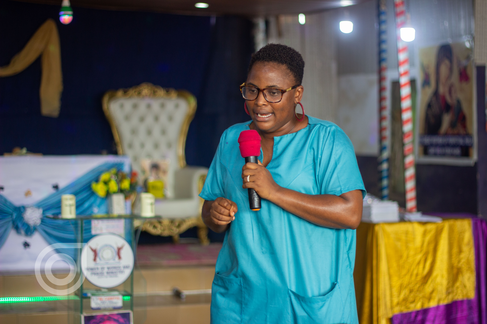
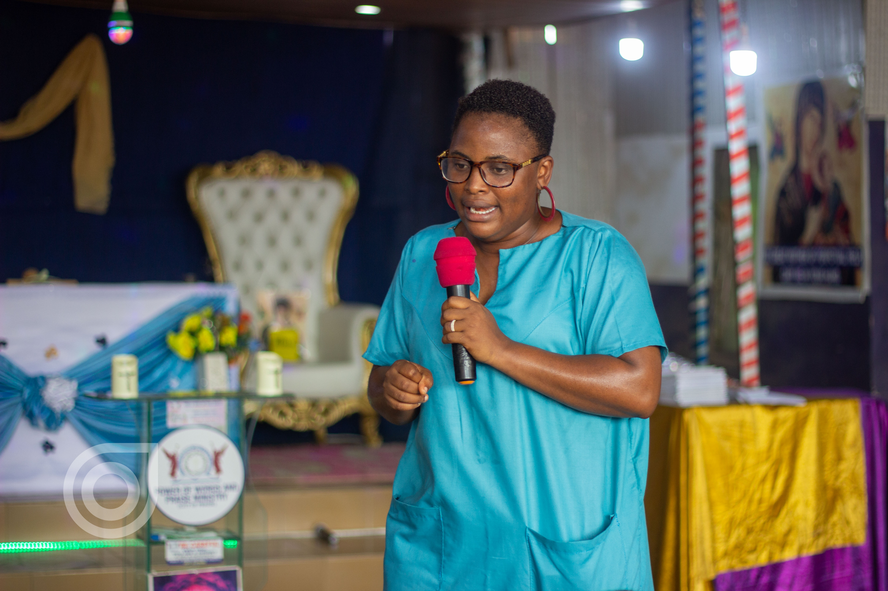

WELCOME TO ATBINSPIRES
My name is
Alice Temi Babalola
I'm a Project Manager, Coach, Counselor and Humanitarian based in Lagos, Nigeria with proven ability to effectively initiate, develop, manage and control people, time and resources between organization and customers. I'm passionate to helping individual and organization understand customers value in developing a project and managing waste while executing such project.
ABOUT
I'm skilled in project management, public speaking, effective oral and writing communication, time management, leadership skill, team collaboration, financial management, reporting and presentation, risk management, problem identification & solving and computer & technical skills.
I seek opportunity where I can grow and develop by contributing to the success of people and organization across areas of project management & execution, training, coaching and counseling
Priorities: I priortize my time, my work, my family and my mental health.
Skills
- Leadership Skills
- Resourceful, flexible, and innovative in a demanding work environment
- Profinciency in current project management tools like Jira, Trello etc.
- High level of attention to details
- HTML, CSS and Web Design with Figma
- High level of attention to details
- Deliver tasks with high precision and in detailed manner.
- I work effectively in a team with great contributions and commitments
- Organizational Skills
- Report Writing Skills
- Problem Solving skills
- Teaching Skills
Mantra : "if you can think it, you can do it". Think it, visualize it, be positive about it."
.jpg) 

SERVICES
Project Management
As a Project Manager, I have the ability to effectively initiate, develop, manage and control people, time and resources between organization and customers. I use various project management tools (Trello, Jira, Asena, Gantt Chart) in other to coordinate my team to get a project completed.
Coaching and Counselling
For more than 6 years as a Teen Coach and Counselor, I have help young people find answers to their 5Ws & H (What, Why, Where, Who, When, and How) questions, identifying their purpose for existence and achieving their life’s goals. I work with schools, parents, Teachers to create an enabling a saving environment for teenagers
Facilitating and Hosting
I facilitate sessions for conferences, seminar, panel session etc. As a host, I anchor events and also host panel sessions. And I can help you with your events.
Public Speaking
As a Project Manager, I have the ability to effectively initiate, develop, manage and control people, time and resources between organization and customers. I use various project management tools (Trello, Jira, Asena, Gantt Chart) in other to coordinate my team to get a project completed.
Journalism and Broadcasting
For more than 6 years as a Teen Coach and Counselor, I have help young people find answers to their 5Ws & H (What, Why, Where, Who, When, and How) questions, identifying their purpose for existence and achieving their life’s goals. I work with schools, parents, Teachers to create an enabling a saving environment for teenagers
Catering Services
At AliceCafe we offer indoor and outdoor catering services for all occasions. You can book me for all kinds of delicious delicacies.
PROJECTS
Here are some of the Projects I have worked on. You can navigate using the NEXT and PREV buttons on the sides